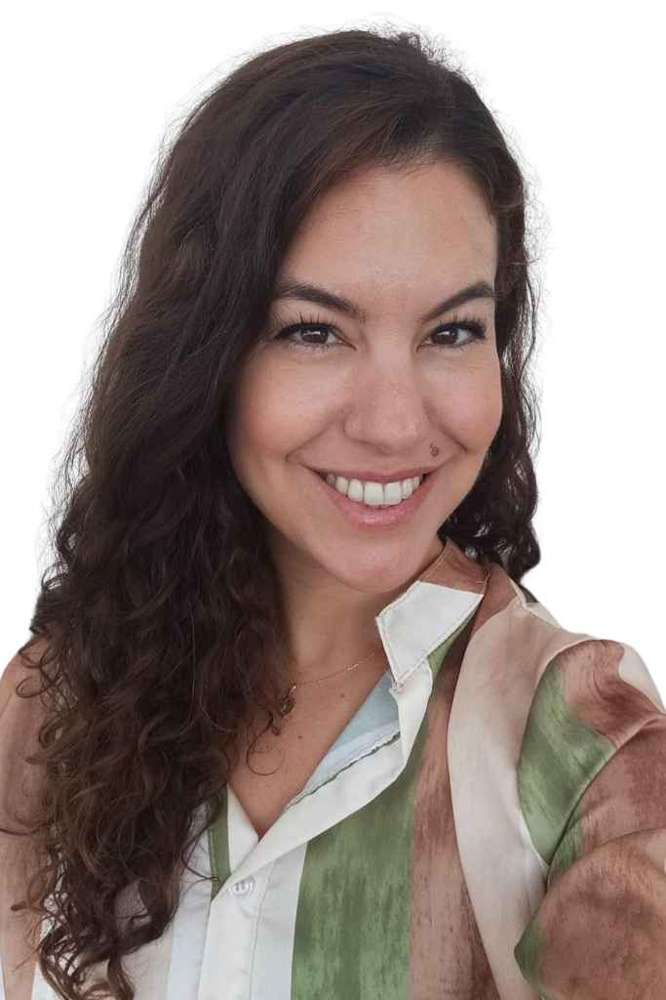
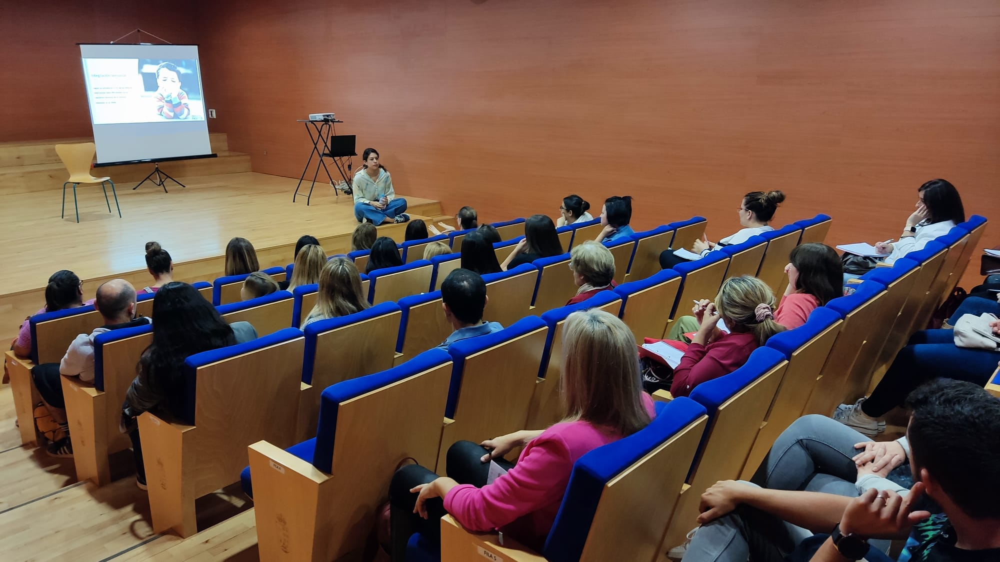
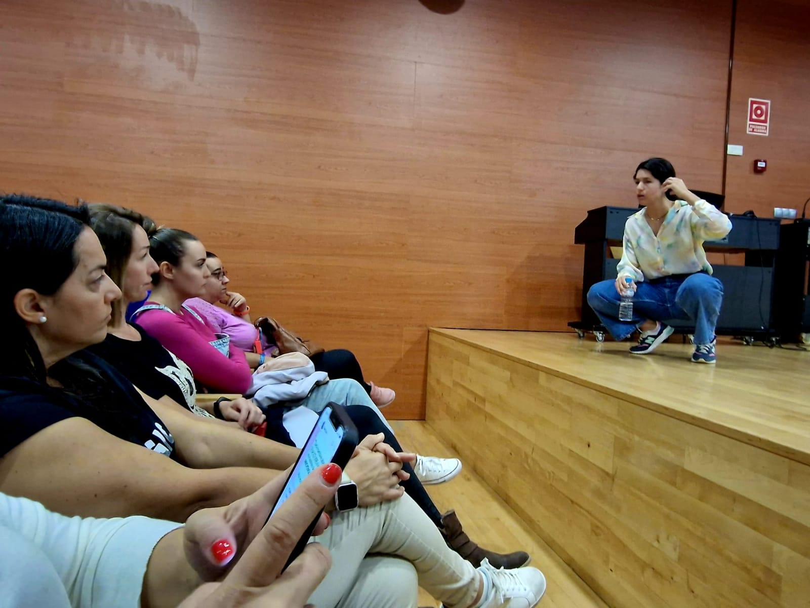

Terapia ocupacional online para adolescentes y adultos neurodivergentes
Regulación sensorial y del sistema nervioso para acompañar el sueño, la alimentación y los procesos de estrés, con técnicas basadas en la evidencia.
Para personas con TDAH, TDA, autismo o altas capacidades, y para las familias de adolescentes.
Cada mes abro solo 6 llamadas gratuitas para atender a cada persona con calma.
¿Prefieres escribirme antes? laurafajardo@proyectopasitos.es

- Terapeuta ocupacional especialista en integración sensorial
- Psiconeuroinmunóloga clínica
- 15 años en neurodiversidad
- Directora y terapeuta de Proyecto PasiTOs desde 2014, centro autorizado por la Comunidad de Madrid (S8268)
¿Para quién es?
Elige la puerta que se parezca más a tu situación.
Soy una persona adulta neurodivergente
Sesiones para adultos con TDAH, TDA, autismo o altas capacidades que quieren entender cómo funciona su sistema nervioso.
- Me cuesta dormir o descansar.
- Me siento saturado/a por ruidos, luces o gente.
- Convivo con estrés, ansiedad o dolores de cabeza.
- Mi alimentación depende de cómo me siento.
Busco ayuda para mi hijo/a adolescente
Sesiones para el adolescente y/o para los padres que necesiten orientación, recursos y estrategias.
- Duerme mal o se acuesta muy tarde.
- Come de forma muy selectiva o irregular.
- Se agobia, se bloquea o se aísla con facilidad.
- Tiene dolores de cabeza o tensión que no sabemos explicar.
Reserva la madre, el padre o quien tenga la tutela.
Cómo trabajo
Parto de la terapia ocupacional y de técnicas basadas en la evidencia, con regulación sensorial y trabajo sobre el nervio vago. Miro a la persona en conjunto, a través de seis esferas que se influyen entre sí:
- Sistema nervioso
- Alimentación
- Ocio y disfrute
- Sueño y descanso
- Sentido y proyecto de vida
- Contexto
Cómo empezar
-
1. Llamada gratuita
15 minutos por videollamada para conocernos y ver cómo puedo ayudarte. No es una consulta ni un diagnóstico.
-
2. Valoración inicial
60 minutos online. Recogemos la información relevante y formulamos hipótesis de trabajo.
-
3. Sesiones de intervención
Acompañamiento con estrategias de manejo y guías de seguimiento individual.
Sesiones online
Priorizo un servicio especializado y personalizado. Cada sesión dura 60 minutos por videollamada.
Sesión inicial de valoración
Ver precio
100 €
Revisamos tu historia y lo que te preocupa, recogemos la información relevante y formulamos hipótesis de trabajo. Es imprescindible antes de contratar un bono.
Reserva tu videollamadaBono de 2 sesiones
Ver precio
190 €
Dos sesiones de 60 minutos con guías de seguimiento individual y estrategias de manejo. Válido durante 2 meses.
Acceder al calendario de citasBono de 4 sesiones
Ver precio
350 €
Cuatro sesiones de 60 minutos con guías de seguimiento individual y estrategias de manejo. Válido durante 2 meses.
Acceder al calendario de citasEl pago se realiza por transferencia bancaria el día anterior a la sesión. Puedes cambiar o cancelar hasta 24 horas antes; pasado ese plazo, la sesión se pierde.
Guías para empezar por tu cuenta
Dos guías en PDF, claras y prácticas, para entender qué te pasa y probar estrategias en casa.
Sobrecarga sensorial y dolor de cabeza: cómo entender lo que te pasa
Qué es la sobrecarga sensorial, cómo reconocerla y estrategias de regulación para el día a día.
15 € IVA incluido
Comprar y descargar la guíaRegulación del sistema nervioso: guía práctica
Cómo funciona, señales de desregulación y ejercicios sencillos basados en la evidencia.
15 € IVA incluido
Comprar y descargar la guíaAl comprar aceptas la descarga inmediata del contenido digital y renuncias al derecho de desistimiento.


Sobre mí
Soy Laura Fajardo, terapeuta ocupacional especialista en integración sensorial y neurodiversidad, y psiconeuroinmunóloga clínica. Llevo 15 años trabajando con niños, adolescentes y adultos con diferencias en el desarrollo.
Acompaño a adolescentes y adultos neurodivergentes a entender cómo procesan el mundo y a cuidar su sistema nervioso con técnicas basadas en la evidencia.
Graduada en Terapia Ocupacional por la Universidad Rey Juan Carlos (URJC). Colegiada n.º 46400519 en COPTOCAM (Colegio Profesional de Terapeutas Ocupacionales de la Comunidad de Madrid).
En qué soy experta
- Perfil sensorial
- Herramientas de regulación
- Mejorar la vida a través de la ocupación humana
- Hábitos de vida saludable
- Sueño y regulación del sistema nervioso
Soy directora y terapeuta de Proyecto PasiTOs desde 2014, centro autorizado por la Comunidad de Madrid (S8268).
Preguntas frecuentes
¿Es terapia psicológica?
No. Es terapia ocupacional: trabajo la regulación sensorial y del sistema nervioso y cómo tus rutinas (sueño, alimentación, descanso) influyen en tu día a día. No sustituyo a un psicólogo ni a un médico.
¿Necesito un diagnóstico para pedir cita?
No. Puedes venir con un diagnóstico de TDAH, autismo u otro, o sin él. En la valoración inicial recogemos tu historia y lo que te preocupa.
¿Funciona online con adolescentes?
Sí. Las sesiones son por videollamada y se adaptan a cada edad. La reserva la hace un padre, una madre o quien tenga la tutela, y la sesión puede ser con el adolescente, con la familia o con ambos.
¿Cómo es la primera sesión?
Dura 60 minutos. Revisamos tu historia, recogemos la información relevante y formulamos hipótesis de trabajo para decidir juntos los siguientes pasos.
¿Puedo cambiar o cancelar una cita?
Sí, hasta 24 horas antes. Pasado ese plazo, la sesión se pierde.
¿Cómo se paga?
Por transferencia bancaria el día anterior a la sesión.
¿Hablamos?
Reserva una llamada gratuita de 15 minutos. Los huecos del mes son limitados; si están completos, escríbeme a laurafajardo@proyectopasitos.es y te aviso cuando se abran nuevas.